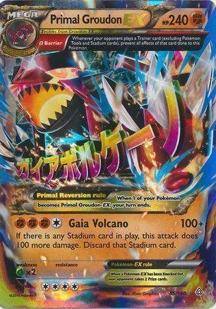
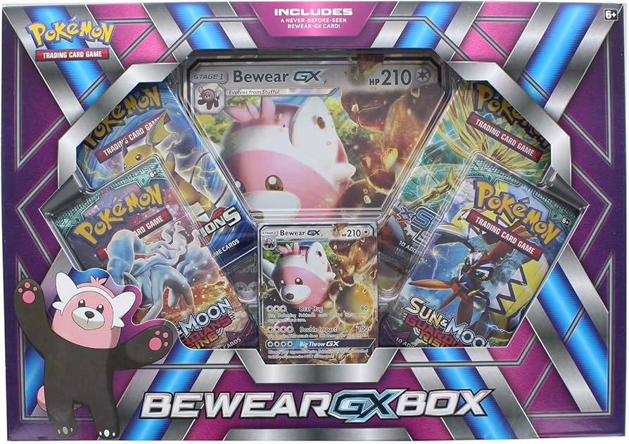
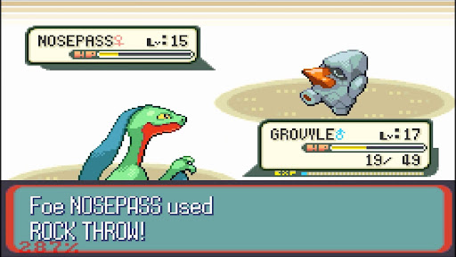

It all started on my 5th birthday when my cousin handed me a tin with 4 packs and a primal groudon card. When I was that young I didn't even know what I was looking at. All I knew was that this was going to be one of my favorite interests.

When I had opened that first pack I experienced a never-before feeling of dopamine and excitement. I loved the feeling of opening packs and just adding everything that I got to my collection. After I ran out of packs, I craved more. I begged my dad to let me get this bundle at pokemon for a price that seemed absurd to my dad at the time; a whopping 9 dollars. He denied and denied until he finally let me get it with my own money. I got a lot of good cards from that box and was very happy with my investment. I was satisfied with cards after that but then the interest shifted from the cards to something else...

Now with the current situation of pokemon trading cards I am done buying them and now, I get pokemon games as birthday presents and watch pokemon nuzlockes on youtube. The Pokemon world is just fascinating and overall I belive is an amazing hobby. If you read through all of that monologue; I hope you enjoy browsing through my website.